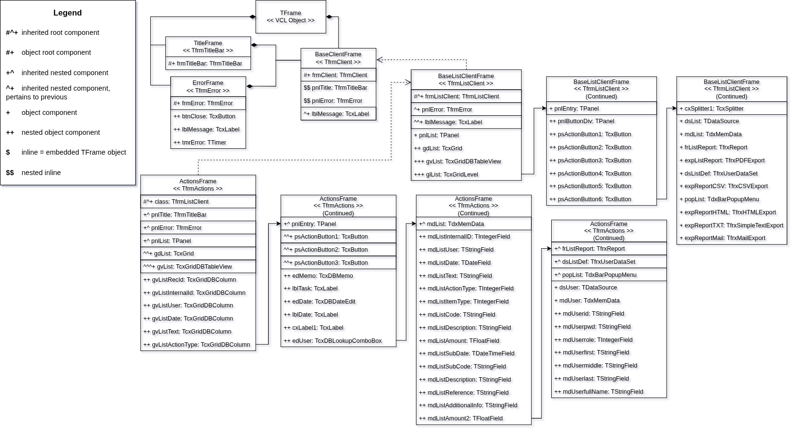

Introduction
The design of transformation rules (and later on the transformation model) is regarded as the most complex component of this tool. It is a crucial step, which necessitates careful architecting to ensure a valid output.
The transformation rules are comprised of a series of design decisions that specify how the conversion from source AST to target AST should be executed. This encapsulates the core component of the Transformation Model, regarded as the Semantic Transformation Layer within the transpiler pipeline.
Preparations
In order to transpile a DFM file to React, the first step is to identify all dependencies of the chosen file. Determining the inheritance hierarchy of a file is a crucial step in establishing the transformation sequence.
Given a 5-level deep inheritance hierarchy of a chosen subset, we shall establish the philosophy of designing transformations for inherited non-root components. The chosen subset's hierarchy has been traced in the figure below, and is used as reference throughout the process of designing transformation rules:

The transpiling strategy will follow a bottom-up approach, working upwards from the furthest leaf-node: ActionsFrame.dfm. This will mean that stubs will be created for missing functionality as the inheritance hierarchy gets transpiled sequentially.
AST Node Refinement
The first step we'll need to take, is to properly define the node categories:
| Node Categories | Examples | |
|---|---|---|
| Layout Properties These control visual positioning and sizing. They map directly to CSS style objects in React. |
• Left • Top • Width • Height • Align • Anchors |
• MinWidth •BestFitMaxWidth • MinSize • DesignSize • ExplicitWidth |
| Visual/Appearance Properties These control how a component looks but are not about position. Will map to CSS styling or component props in React. |
• Color • ParentColor • ParentBackground • Visible • Caption |
• Transparent • BevelOuter • PaintStyle • BorderWidth |
| Behavioral/Configuration Properties These configure how the component behaves at runtime but do not directly affect layout or appearance. Typical transition for React: component props. |
• TabOrder • TabStop • Enabled • AutoSize • SortIndex • SortOrder • SortOptions • GroupIndex |
• DisplayWidth • Size • FieldName • Version • DotMatrixReport • Separator • UTF8 |
| Namespaced Configuration Properties These are configuration properties scoped under a sub object. Syntactically they use the SUBPROPERTY token. Semantically they are still configuration but grouped. |
• Options.Filtering • OptionsData.Editing • OptionsView.CellEndEllipsis • Properties.Alignment.Vert • Properties.WordWrap • SpeedButtonOptions.Transparent |
• Constraints.MaxHeight • HotZone.SizePercent • PreviewOptions.Zoom • PrintOptions.Printer •ReportOptions.CreateDate |
| Data Binding Properties These connect a UI component to a data source. They have direct implications for React state management. |
• DataBinding.FieldName • DataBinding.DataField • DataBinding.DataSource |
•DataController.DataSource • DataSet |
| Event Handlers These wire up user interactions or lifecycle events to Object Pascal methods. In React, they will become callback props or handler functions. |
• OnClick • OnChange • OnTimer • OnEnter • OnExit • OnResize • OnDblClick • OnGetDisplayText |
• OnSendMail • OnCheckEOF • OnFirst • OnNext • OnPrior • OnGetValue • BeforePost |
| Cross Component References These point to another component either within the same file or in an external module. |
• FocusControl = edDate • PopupMenu = popList • Control = pnlEntry • GridView = gvList • Properties.ListSource = dsUser |
• Action = frmMain.aiAdd • OptionsImage.Images = dmMain.ilNormal16x16 • BarManager = frmMain.BarManager |
| Non Visual Service Components These are entire component declarations (not individual properties) that have no visual representation. Such as data sources, timers, report generators, exporters, and so on. |
• TDataSource • TdxMemData • TfrxReport • TfrxPDFExport • TfrxCSVExport • TfrxHTMLExport • TfrxSimpleTextExport • TfrxMailExport |
• TfrxUserDataSet • TTimer • TdxBarPopupMenu • TIntegerField • TStringField • TDateField • TFloatField • TDateTimeField |